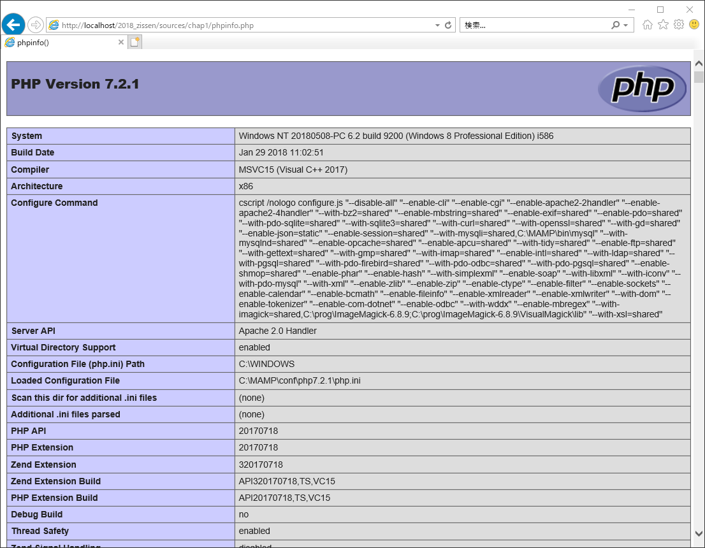
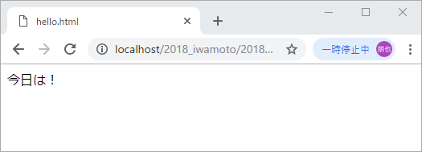
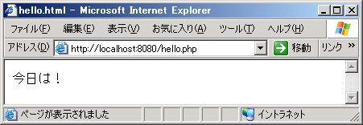
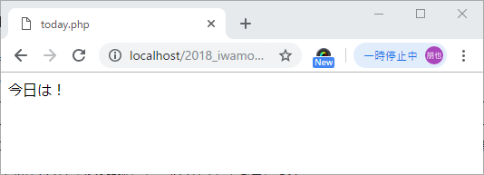
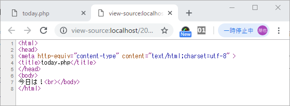
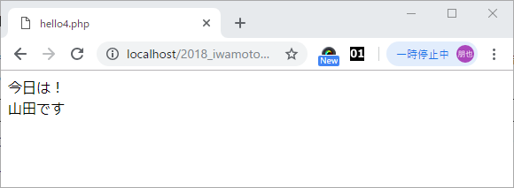
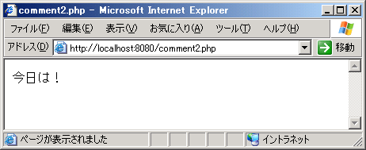
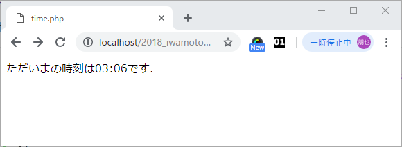
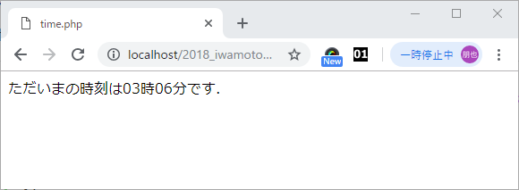

localhost: 以下の動作環境は，OSはWindows，WWWシステムはApache2，プログラミング言語はPHP5です．Webサーバは動作確認用ということで，ブラウザのあるクライアントPCと同一のPCとし，サーバ名は「localhost:80」です．「80」はポート番号で省略可能です．Apacheでlocalhostに接続する場合の既定のポート番号です．実験では，Linux(Ubuntu)を用いるため，若干異なる点があります．
スクリプト: C言語やJavaの場合，ソースプログラムをあらかじめコンパイラを用いて機械語に変換しておく必要がありますが，PHPの場合はそのような事前の変換処理が不要で，Webサーバはソースプログラムを直接読み取って実行します．このようにあらかじめコンパイラ処理が不要な簡易なプログラムをスクリプトといいます．スクリプトを記述するための言語をスクリプト言語といいます．
※教材のプログラムは全てchrome推奨です。動作の確認は全てGoogle Chromeで行ってください。
Webサーバで，PHPが正常に動作しているかを確認するために，以下の簡単なスクリプトを作成します．phpinfo()は，PHPの環境設定情報を出力する関数です．ファイル名をphpinfo.phpとします．
リスト1.1 phpinfo.php<?php phpinfo(); ?>
このスクリプトをWebサーバのドキュメントルートディレクトリにアップロードし，ブラウザからそのURLにアクセスしてみます．ここでは，URLを下記とします．
http://localhost/phpinfo.php
図のようなWebページが表示されれば，Webサーバで正常にPHPが動作しています．
PHPのスクリプトはHTMLファイルの中に埋め込む形で記述します．HTMLファイルの拡張子は「.html」ですが，PHPのスクリプトが埋め込まれている場合の拡張子は「.php」とする必要があります．
PHPのスクリプトをHTMLファイルに埋め込んだ場合に，どこからどこまでがHTMLで記述されていて，どこからどこまでがPHPのスクリプトかを区別する必要があります．HTMLファイルの中で，PHPスクリプトの始まりと終わりを示す特別の文字列のことをデリミタといいます．文字列「<?php」はPHPスクリプトの始まりを示すデリミタで，「?>」はPHPスクリプトの終わりを示すデリミタです．なお，上記リスト1.1では簡単のため，<html>,<head>,<body>などすべてのHTMLタグが省略されています． この場合，ブラウザは自動的に既定のタグを補ってくれます．
PHPのスクリプトは，文（ステートメント）の集まりとして記述されます．文の終わりには必ず「;」（セミコロン）を記述する必要があります．リスト1.1で「phpinfo()；」は一つの文です．ここではPHPの中にあらかじめ組み込まれた関数phpinfo()を呼び出しています．
リスト1.2のスクリプトを記述します．このスクリプトをhello.htmlというファイル名でドキュメントルートディレクトリにアップロードします．
リスト1.2 hello.html
<html>
<head>
<meta http-equiv="content-type" content="text/html;charset=utf-8" >
<title>hello.html</title>
</head>
<body>
今日は！<br>
</body>
</html>
このURLにアクセスすると，図のように表示されます．
HTMLファイルはファイル拡張子を「.php」とすれば，そのままPHPファイルと認識され，HTMLファイルと同じ動作をします．リスト1.2の拡張子を「.php」に変更して保存し，ドキュメントルートディレクトリにアップロードします．
リスト1.3 hello2.php
<html>
<head>
<meta http-equiv="content-type" content="text/html;charset=utf-8" >
<title>hello.html</title>
</head>
<body>
今日は！<br>
</body>
</html>
ただし，ファイルとして保存するときに，文字コードを日本語UTF-8コードとして保存します．リスト1.3のファイルにアクセスした結果を図に示します．
文字コードを指定するときは<head></head>の間に以下のmetaコードを埋め込みます
<meta http-equiv="content-type" content="text/html;charset=utf-8" >

ここでは，簡単なPHPスクリプトを記述してみます．PHPスクリプトはいろんな処理を実行しますが，結果的にはクライアントPCにHTMLタグによる文字列を動的に生成し送信します．そこで，スクリプトの中できわめて基本的な，クライアントPCに文字列を送信するスクリプトを記述してみましょう．このスクリプトは次のような文として記述します．
print "送信文字列";
送信文字列の長さは任意です．送信文字列の両端は「"」（ダブルクォーテーション）で囲む必要があります．
リスト1.4のスクリプトを記述して，アクセスしてみましょう．
リスト1.4 today.php<html> <head> <meta http-equiv="content-type" content="text/html;charset=utf-8" > <title>today.php</title> </head> <body> <?php print "今日は！<br>"; ?> </body> </html>
リスト1.4のファイルにアクセスした結果を図に示します．

ちなみに，このWebページのHTML表示をみてみると図のようになっています．

（注）WebページのHTML表示をみるには，ブラウザ（IE)で「表示」竏秩uソース」を選択します．
つまり，PHPスクリプト領域の
<?php print "今日は！<br>" ?>
の部分は，ApacheのPHPモジュールで解釈・実行されて，その結果
"今日は！<br>"
の文字列をクライアントに送信していたことがわかります．逆に，PHPスクリプトがそのままクライアントに送信されることはありません．
リスト1.4に示したように，PHPファイルでは，HTMLタグとPHPスクリプトを混在して記述できます．HTMLタグを記述してある領域とPHPスクリプトを記述してある領域を区別するために，一対のデリミタが使われます．デリミタは「<?php」と「?>」で記述されます．「<?php」は，PHPスクリプトの開始タグで，「?>」はPHPスクリプトの終了タグです．
PHPスクリプトは，文（ステートメント）の集まりとして記述されます．文の終わりは「;」（セミコロン）で示します．セミコロンを書き忘れると構文エラーとなり，スクリプトが正常に動作しなくなります．
スクリプト領域では，一般に文は１行に１個のみ記述します．１個の文を複数行にわたって記述することもできます．たとえば，リスト3.5は正しく実行されます．
リスト1.5 today2.php<html> <head> <meta http-equiv="content-type" content="text/html;charset=utf-8" > <title>today2.php</title> </head> <body> <?php print "今日は！<br>"; ?> </body> </html>
１行に複数の行を記述する場合は，たとえば，リスト1.6のように記述します．
リスト1.6 today3.php<html> <head> <meta http-equiv="content-type" content="text/html;charset=utf-8" > <title>today3.php</title> </head> <body> <?php print "今日は！<br>"; print "山田です<br>"; ?> </body> </html>
結果は，図のようになります．

リスト1.6はリスト1.7のように記述することも可能です．
リスト1.7 hello5.php<html> <head> <meta http-equiv="content-type" content="text/html;charset=utf-8" > <title>hello5.php</title> </head> <body> <?php print "今日は！<br>" . "山田です<br>"; ?> </body> </html>
「.」（ピリオド）は，文字列の結合演算子です．つまり，
"今日は！<br>" . "山田です<br>"
は以下の文字列になります．
"今日は！<br>山田です<br>"
単一行のコメントは「//」か「#」で始め，その後ろにコメント文字列を記述します．終了を指示する記号はなく，その行の行末までをコメントとみなします．コメントの開始は，行の先頭でも途中でも構いません．リスト1.8にサンプルを示します．
リスト1.8 comment.php<html> <head> <meta http-equiv="content-type" content="text/html;charset=utf-8" > <title>comment.php</title> </head> <body> <?php // PHPスクリプトの始まりです print "今日は<br>"; // PHPスクリプトです # PHPスクリプトの終わりです ?> </body> </html>
複数行のコメントはコメント文を「/*」と「*/」で囲みます．途中で改行することができます．リスト1.9にサンプルを示します．
リスト1.9 comment2.php<html> <head> <meta http-equiv="content-type" content="text/html;charset=utf-8" > <title>comment2.php</title> </head> <body> <?php print "今日は！<br>"; /* 複数行のコメント 改行することができます print "今日は！<br>";はコメントで，実行されません */ ?> </body> </html>
結果は，図のようになります．当然ですが，コメント部分は，表示されません．

HTMLファイルで時刻を表示する場合は，例えばリスト1.10のように記述します．
リスト1.10 time.html<html> <head> <meta http-equiv="content-type" content="text/html;charset=utf-8" > <title>time.html</title> </head> <body> 更新時刻は１６時２１分です．<br> </body> </html>
静的なHTMLファイルでは，時刻もあらかじめ文字列で記述しておく必要があります．したがって，利用者がHTMLファイルにアクセスした時刻などを動的に表示することはできません．
PHPファイルでは，簡単に現在の時刻をWebページに表示することができます．現在の時刻を表示するためのPHPファイルの例をリスト1.11に示します．date()はPHPの組み込み関数で，現在のシステム時刻（Webサーバの管理する時刻）を返す関数です．引数"H:i"は，時刻の表示法を指示する文字列です．"H"は，２桁の数字で表した２４時間単位の時を表示します．"i"は，２桁の数字で表した分を表示します．":"は時と分の間にコロンを表示することを意味します．関数は，あるひとまとまりの処理をするスクリプト文（ステートメント）の集まりです．組み込み関数とはあらかじめPHPで準備されている関数です．これに対して，ユーザが任意に定義して利用できるユーザ定義関数もあります．関数に，データを渡したいときには，引数を利用します．引数の個数は任意です．ない場合もありますし，２個や３個の場合もあります．date()関数では引数の数は１個で，時刻の表示形式を文字列で与えています．関数で処理した結果の値は，関数名を変数名とみなして，関数名に値が代入された形で，元のスクリプトに引き渡されます．下の例では，処理結果としての時刻の値「16:53」の文字列は，関数名dateに代入された形で，元のスクリプトに渡されます．
print "ただいまの時刻は" . date("H:i") . "です．<br>";
は以下と同義になります．
print "ただいまの時刻は" . "16:53" . "です．<br>";
ただし，このtime.phpファイルにいつアクセスするかにより，時刻の値は動的に変わります．
リスト1.11 time.php
<html>
<head>
<meta http-equiv="content-type" content="text/html;charset=utf-8" >
<title>time.php</title>
</head>
<body>
<?php
print "ただいまの時刻は" . date("H:i") . "です．<br>";
?>
</body>
</html>
このPHPファイルにアクセスした結果を以下に示します．

date()関数の引数を"H時i分"とすれば，以下のように表示されます．
